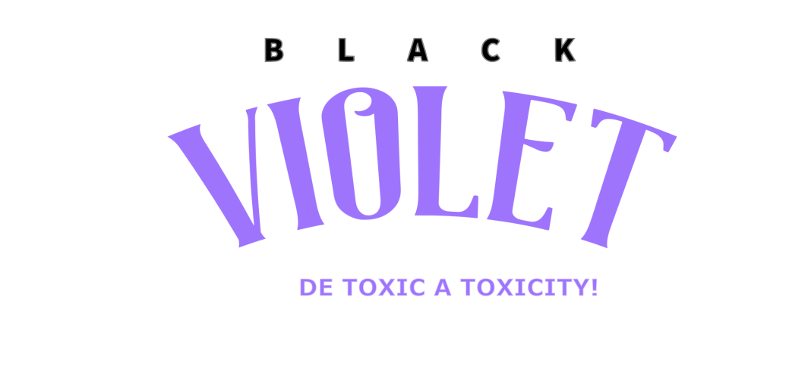

Media Kit Oficial
Use a barra de espaço para navegar, ou as setas no de navegação no canto direito.
A apresentação contém slides horizontais e verticais.
Um show vai muito além de músicas executadas
corretamente.
Um show é uma experiência completa.
Desde o momento da abertura dos portões, a expectativa criada, até a sinergia entre cada elemento no palco.
Essa é a visão da Black Violet.

Um novo conceito para o Rock Nacional,
combinando elementos modernos,
a um variado repertório de grandes sucessos dos anos 2000.
Uma experiência auditiva, visual e emocional.